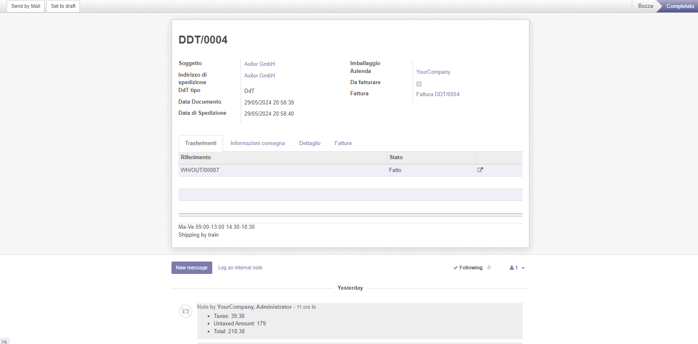

Delivery Document Type

Documento di Trasporto






This module manages the Italian deliver document AKA DdT. The DdT is a document container of picking, so every action on the DDT is appled to all pickings inside DdT.
You can create invoices from DdT rather than invoice from Sale Orders.

Gestione documento di trasporto, conosciuto anche come DdT. Il DDT è documento contenitore dei prelievi; così ogni azione sul DdT viene applicata a tutti i prelievi dentro il DdT.
Il modulo permette anche di creare fatture basate su DdT in alternativa alla fatturazione da ordini.


Inventory » DdT Data » Type
Inventory » DdT Data » Carriage Condition
Inventory » DdT Data » Descriptions of goods
Inventory » DdT Data » Reasons of Transportation
Inventory » DdT Data » Methods of Transportation

Inventario » Dati DdT » Tipo DDT
Inventario » Dati DdT » Condizioni di trasporto
Inventario » Dati DdT » Descrizione beni
Inventario » Dati DdT » Causale del trasporto
Inventario » Dati DdT » Metodo di trasporto


You can automatically create a DDT From a Sale Order, setting 'Automatically create the DDT' field that will automatically create the DDT on Sale Order confirmation.
You can also directly create a DDT using
Inventory » Operations » DDT
menu and add existing delivery orders to it, in the transfers tab.
When you work with delivery orders, you can create a DDT selecting 1 or more pickings and launching the action DDT from pickings.
Also, you can select 1 or more pickings and run add pickings to DDT to add the selected delivery orders to an existing DDT
If the state of the delivery orders allows it, you can deliver them from the DDT directly, clicking put in pack and package done
Finally you can create your invoice directly from the DDT using the 'Create Invoice' button that creates a new Invoice with the ddt lines as invoice lines

Per creare il DDT alla conferma di un ordine di vendita, impostare il campo 'crea automaticamente il DDT'.
Per creare un DDT direttamente da consegna:
Inventario » Operazioni » DDT
e aggiungendo degli ordini di consegna esistenti al DDT, nel tab trasferimenti .
Dagli ordini di consegna, si può creare un DDT selezionando 1 o più ordini di consegna ed eseguendo l'azione DDT da Picking.
Si possono selezionare 1 o più ordini di consegna ed eseguire aggiungi Picking al DDT per aggiungere gli ordini selezionati ad un DDT esistente.
Se lo stato degli ordini di consegna lo permette, è possibile consegnarli tutti direttamente dal DDT, cliccando sui bottoni metti nel pacco e pacco completato.
Infine, è possibile creare la fattura direttamente dal DDT usando il bottone 'crea fattura' il quale crea una nuova fattura usando le righe del DDT.
E' possibile fatturare i DDT che hanno una 'Causale trasporto' impostata come 'da fatturare'
Authors | Autori:
Contributors | Partecipanti:
This module is maintained by the SHS_AV s.r.l..
This module is part of l10n-italy project.
Published information on | Informazioni pubblicate: 2024-05-30